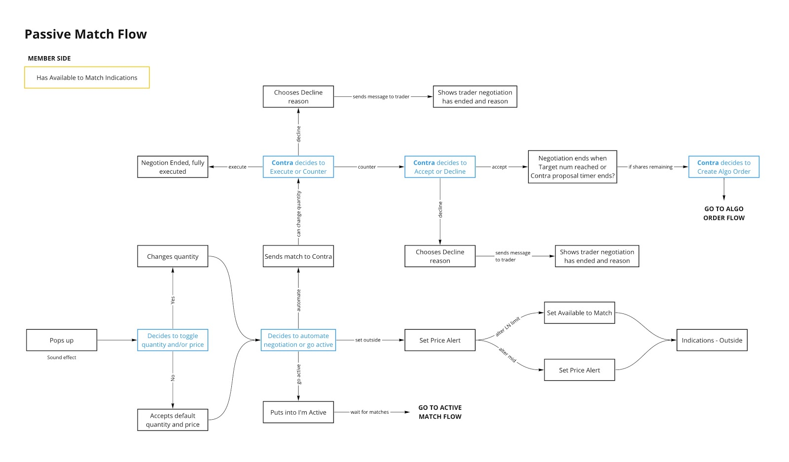
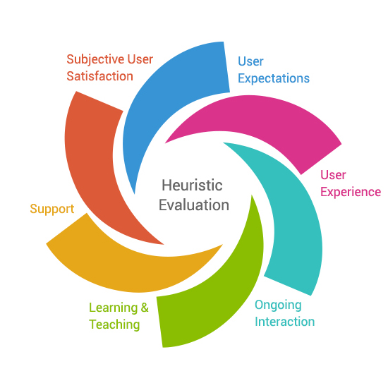

We did several rounds of interview, and talked with 22 people in total. Some of them are from inside Liquidnet and some of them does not.
Product Research
How does the current product serves the need of users? How is the product used in the context? What are the things that can be imporoved?
Methods
To answer our questions, we used four different methods to better understand the product itself and how people use it.

We understand the comprehensive ecosystem by building sequence models.

Heuristics Evaluation is a time efficient and systematic way of evaluating existing product

User’s feedback on the developing product help us see our current state transfer to future state

Service Blueprint is a way of seeing how the product fit in to users’ day to day job.
Insights
Based on our understanding of the product, we saw these 3 major findings having the most potential to be re-designed.
01
Liqiuidnet is an execution ecosystem that satisfies different workflows, styles, and concerns
“We keep inovating on features and this is recognized among members”
-- Relationship Manager
“ Discovery is a good tool to monitor trades on the desk, and keep track of market or trading events.“
-- Trader
Opportunities
Tailor the design of the product to specific user rather than educating users how make the product work for them
02
Traders want analytics that help them make decision and communicate their work
“I want to see X to be benched against Y as my clients look at that.”
-- Trader
“ I prefer X be shown as we use this benchmark to determine when to trade”
-- Trader
Opportunities
Provide the right information at the right moment when traders need to make decision
Allow traders to customize what is information to be shown
Make analytics easy to share with other people
03
Current Product has some usability issues
“It’s a little tough to see events on smaller ADV orders. The bubbles are so small”
-- Trader
“I find that the sliding bar on the volume event tiles hard to decipher”
--Portfolio Manager
Opportunities
Commonly evaluate the product against Neilson Norman heuristics.
Establish feedback channel that is friendly for users to collect feedback constantly.